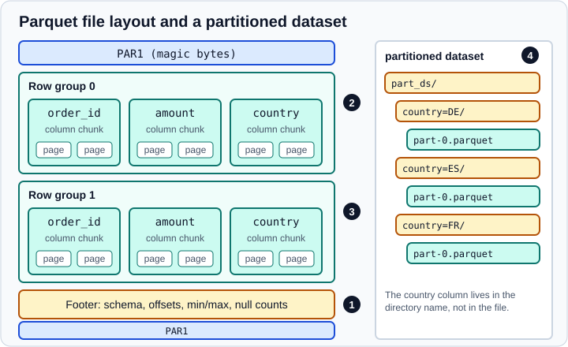

Parquet, Feather, ORC and Iceberg
|
This content was generated with the assistance of AI and should be verified against the official documentation before being relied on in production. |
CSV is the format everyone can open, but it throws away types, forces a parser to guess them again and has to be read
from start to end. The formats on this page are columnar and typed: each column is stored together with its own
dtype, so a reader can fetch only the columns it needs, skip chunks of rows it does not need and get the types back
exactly. This page covers read_parquet and to_parquet, read_feather and to_feather, read_orc and to_orc, and
the Apache Iceberg pair read_iceberg and to_iceberg that arrived in pandas 3.0.
The page targets Python 3.13 or 3.14 and pandas 3.1, and was checked in October 2026. Every example was run on pandas 3.1.0 with PyArrow 26.0.0 and NumPy 2.5.4. The Iceberg example additionally used PyIceberg 0.12.0 with SQLAlchemy 2.1. For text formats see CSV and Text Files, Excel and JSON, HTML and XML. For databases see SQL Databases, and for what happens to dtypes when data comes from Arrow see PyArrow-Backed Data.
Choosing a format
| Format | Strengths | Limits | Typical use |
|---|---|---|---|
Parquet |
Compressed, columnar, row groups with min/max statistics, partitioned datasets, readable by Spark, DuckDB, Polars and most warehouses |
Not human-readable; duplicate or non-string column names and mixed-type object columns are rejected |
Long-term storage and exchange of analytical tables |
Feather |
Very fast to write and read because it is the Arrow in-memory layout on disk (the Arrow IPC file format) |
Meant for short-lived hand-offs; no row-group statistics for skipping data |
Passing a table between Python and R, caching intermediate results |
ORC |
Columnar and compressed, common in the Hadoop and Hive world |
Needs PyArrow, is not supported on Windows, has no categorical support and does not keep time zones |
Reading files produced by Hive or Spark jobs |
Iceberg |
A table format on top of Parquet files: snapshots, time travel, schema evolution, predicate pushdown |
New in pandas 3.0 and documented as experimental; needs PyIceberg and a catalog |
Reading and writing tables that a lakehouse platform manages |
As a rule of thumb: use Parquet by default, Feather for a short hand-off between processes, and read ORC or Iceberg only when that is what the data platform already produces.
Installing the engines
pandas does not read these formats itself; it delegates to optional dependencies. Install them in the virtual environment of the project (see Virtual Environments and Packaging).
python -m pip install "pandas>=3.1" pyarrow # Parquet, Feather, ORC
python -m pip install fastparquet # optional second Parquet engine
python -m pip install "pyiceberg[sql-sqlite]" # Iceberg with a local SQL catalogPyArrow stays an optional dependency of pandas. Older articles that say it "will become a required dependency with
pandas 3.0" are outdated: that plan was postponed, so pandas 3.1 still installs without it. Without PyArrow
read_parquet falls back to fastparquet if that is installed and otherwise raises an ImportError.
The sample table
The examples below use a small orders table, written once and reused. It has an integer index with a name, a categorical column, a float column with a missing value, a datetime column and a string column.
import pandas as pd
df = pd.DataFrame({
"order_id": [1, 2, 3, 4, 5, 6],
"country": pd.Categorical(["ES", "FR", "ES", "DE", "FR", "ES"]),
"amount": [10.5, 20.0, None, 7.25, 3.0, 99.9],
"ordered": pd.to_datetime([
"2026-01-01", "2026-01-02", "2026-02-01",
"2026-02-15", "2026-03-01", "2026-03-02",
]),
"note": ["a", "b", None, "d", "e", "f"],
}).set_index("order_id")
print(df.dtypes)country category
amount float64
ordered datetime64[us]
note str
dtype: objectSource: pandas.Categorical
Notice that ordered is datetime64[us] and note is the str dtype: these are the pandas 3 defaults, described in
Text Data and the str Dtype.
Parquet
Apache Parquet stores a table as a sequence of row groups. Inside each row group every column is written as a separate column chunk, split into pages that are compressed independently. A footer at the end of the file holds the schema, the position of every chunk and statistics such as the minimum, the maximum and the number of nulls for each column of each row group.

The numbered markers refer to the following points. Marker 1: the footer is read first, so a reader learns the schema and
the statistics without scanning the data. Marker 2: a reader that needs only amount reads only the amount column
chunks and never touches the others. Marker 3: a filter such as amount > 50 lets the reader skip every row group
whose maximum is smaller than 50. Marker 4: a partitioned dataset moves one or more columns into directory names so that
whole files can be skipped. The drawing is an original illustration of the format described on the Parquet project site.
Writing and reading
df.to_parquet("orders.parquet")
back = pd.read_parquet("orders.parquet")
print(back.dtypes)
print(back.index.name, back.equals(df))country category
amount float64
ordered datetime64[us]
note str
dtype: object
order_id TrueSource: pandas user guide: Parquet
Every dtype, including the category and the datetime resolution, and the named index survive the round trip. That is the main
difference from CSV, where all of this has to be re-declared with dtype= and parse_dates=. The file also records
the pandas metadata that makes this possible, which you can see with PyArrow:
import pyarrow.parquet as pq
print(pq.read_schema("orders.parquet"))country: dictionary<values=string, indices=int8, ordered=0>
amount: double
ordered: timestamp[us]
note: large_string
-- schema metadata --
pandas: '{"index_columns": [{"kind": "range", "name": "order_id", "start"' + 771Source: pandas user guide: Parquet
Choosing columns and filtering rows
Reading fewer columns is the cheapest speed-up there is, because the other column chunks are never read from disk.
filters pushes a row filter down to the engine, which can then use the footer statistics to skip row groups.
print(pd.read_parquet("orders.parquet", columns=["amount"]).head(2))
print(pd.read_parquet("orders.parquet", filters=[("amount", ">", 10)])) amount
order_id
1 10.5
2 20.0
country amount ordered note
0 ES 10.5 2026-01-01 a
1 FR 20.0 2026-01-02 b
2 ES 99.9 2026-03-02 fSource: pandas.read_parquet
Two details of the second result are worth remembering. First, the filter is a list of (column, operator, value)
tuples, and a list of lists means OR of ANDs (disjunctive normal form). Second, the rows come back with a fresh
RangeIndex: in this example the stored order_id index was not restored when filters was used (the three rows are
numbered 0 to 2), so call set_index yourself if you need it. Treat filters as a way to read less data, and apply an
ordinary pandas boolean mask afterwards if you depend on the exact result.
The index
pandas writes a plain RangeIndex as a few numbers of metadata. Any other index is written as extra columns. With the PyArrow
engine an unnamed non-default index becomes a column called __index_level_0__, and with fastparquet it is
called index. Index level names must be strings. Pass index=False to leave the index out, or index=True to
always write it.
df.to_parquet("no_index.parquet", index=False)
print(pd.read_parquet("no_index.parquet").columns.tolist())['country', 'amount', 'ordered', 'note']Source: pandas.DataFrame.to_parquet
Partitioned datasets
partition_cols writes a directory tree in the Hive style: one directory per distinct value, named column=value. The
path then names a directory instead of a file.
from pathlib import Path
df.reset_index().to_parquet("part_ds", partition_cols=["country"])
for p in sorted(Path("part_ds").rglob("*.parquet")):
print(p.parent.name)
back = pd.read_parquet("part_ds")
print(back.dtypes)
print(pd.read_parquet("part_ds", filters=[("country", "==", "ES")]).shape)country=DE
country=ES
country=FR
order_id int64
amount float64
ordered datetime64[us]
note str
country category
dtype: object
(3, 5)Source: pandas.DataFrame.to_parquet
The partition column is rebuilt from the directory names and comes back as category, as the last column. A filter on a
partition column is the most effective filter there is, because whole directories are skipped without opening a
file. Partitioning also has a cost: a column with thousands of distinct values produces thousands of small files, which
is slower to read than one file. Partition on columns with few distinct values that you filter on often, such as a date
part or a country.
Compression, row groups and bytes
The default compression is snappy: fast, with a modest ratio. compression also accepts values such as gzip,
brotli, lz4 and zstd where the engine supports them, and None for no compression. zstd is a common choice for
a better ratio at a similar speed. Options that pandas does not name are passed through to the engine, so
row_group_size (a PyArrow option) controls how many rows go into each row group:
import pyarrow.parquet as pq
pd.DataFrame({"a": range(10)}).to_parquet("rg.parquet", row_group_size=4)
print(pq.ParquetFile("rg.parquet").metadata.num_row_groups)
raw = df.to_parquet() # no path: the file content is returned as bytes
print(type(raw))3
<class 'bytes'>Source: pandas.DataFrame.to_parquet
Smaller row groups give finer filtering but more metadata; very large ones reduce skipping. Row groups of hundreds of thousands to a few million rows are a common compromise. Passing no path is handy for tests and for uploading to object storage without a temporary file.
Engines and the Arrow backend
engine="auto" (the default, controlled by the option io.parquet.engine) uses PyArrow when it is installed and
fastparquet otherwise. The engines are not identical:
-
PyArrow supports
PeriodandIntervaldtypes and preserves extension types;fastparquetdoes not. -
With PyArrow a categorical of non-string values may come back as its primitive dtype.
-
dtype_backend="pyarrow"is not supported byfastparquet. -
With
version="1.0"auint32column is stored asint64and does not round-trip; the default format version keeps it.
dtype_backend="pyarrow" keeps the Arrow types in memory instead of converting to NumPy-backed ones:
print(pd.read_parquet("orders.parquet", dtype_backend="pyarrow").dtypes)country dictionary<values=string, indices=int8, ordere...
amount double[pyarrow]
ordered timestamp[us][pyarrow]
note large_string[pyarrow]
dtype: objectSource: pandas.read_parquet
The trade-offs of that choice are discussed in PyArrow-Backed Data.
A cloud URL such as s3://bucket/orders.parquet also works as the path when the matching fsspec library is
installed; credentials go in storage_options or in the environment, never in the code.
What Parquet refuses
try:
pd.DataFrame({"x": [1, "a"]}).to_parquet("mixed.parquet")
except Exception as exc:
print(type(exc).__name__)
try:
pd.DataFrame([[1, 2]], columns=["a", "a"]).to_parquet("dup.parquet")
except ValueError as exc:
print(exc)ArrowInvalid
Duplicate column names found: ['a', 'a']A column that mixes integers and strings cannot be given one Parquet type, so clean it first (see Missing Data and Data Types Overview). Duplicate and non-string column names are not supported either.
Feather
Feather version 2 is the Arrow IPC file format: the bytes on disk are the Arrow memory layout, so reading is almost a memory map and no decoding is needed. It is the right format to hand a table to another process or language on the same machine, or to cache an intermediate result.
df.reset_index().to_feather("orders.feather")
print(pd.read_feather("orders.feather").dtypes)
df.reset_index().to_feather("orders_zstd.feather", compression="zstd")
print(pd.read_feather("orders.feather", columns=["order_id", "amount"]).head(2))order_id int64
country category
amount float64
ordered datetime64[us]
note str
dtype: object
order_id amount
0 1 10.5
1 2 20.0to_feather accepts the PyArrow write_feather options such as compression ("zstd", "lz4" or
"uncompressed") and chunksize. Dtypes, including categoricals and time-zone-aware datetimes, are preserved.
The pandas user guide states that Feather requires a default index, and that duplicate or non-string column names and
Python objects in object columns are not supported. On pandas 3.1.0 with PyArrow 26.0.0 writing a DataFrame with a named
integer index and another with a string index both succeeded and the index round-tripped. The documented behaviour is
the one to design for: call reset_index() before writing, and set_index() after reading, so files stay readable by
tools that ignore pandas metadata.
Source: pandas user guide: Feather
ORC
ORC (Optimized Row Columnar) comes from the Hadoop ecosystem. pandas reads and writes it through PyArrow only.
flat = df.reset_index().assign(country=lambda d: d["country"].astype(str))
flat.to_orc("orders.orc")
print(pd.read_orc("orders.orc", columns=["order_id", "ordered"]).dtypes)
try:
df.reset_index().to_orc("with_category.orc")
except NotImplementedError as exc:
print(exc)order_id int64
ordered datetime64[ns]
dtype: object
The dtype of one or more columns is not supported yet.Four limits to keep in mind, all from the official user guide or reproduced above:
-
The pandas documentation says
read_orcandto_orcare not supported on Windows yet, and recommends installing PyArrow with conda. -
Categorical columns raise
NotImplementedErroron write, as shown. Convert them to strings first. -
Time zones are not preserved. A
Europe/Madriddatetime column written to ORC was read back asdatetime64[ns, UTC]with pandas 3.1 and PyArrow 26, whereas Parquet keptdatetime64[us, Europe/Madrid]. -
Resolution changes: a column written as
datetime64[us]was read back asdatetime64[ns], which matters if you compare with the pandas 3 default.
Source: pandas user guide: ORC
Apache Iceberg
Iceberg is a table format: the data still lives in Parquet files, but a metadata layer adds snapshots, schema
evolution, partition evolution and atomic commits. pandas 3.0 added read_iceberg and DataFrame.to_iceberg on top
of PyIceberg. Both are documented as experimental and may change without warning, so keep the calls behind a small wrapper
in your own code.
An Iceberg table is found through a catalog. A catalog is configured in a .pyiceberg.yaml file (usually in the home
directory), through environment variables, or with the catalog_properties argument, which can also define a catalog
completely when catalog_name is omitted. The example below needs no server: a SQLite file is the catalog and a local
directory is the warehouse.
from pathlib import Path
import pandas as pd
from pyiceberg.catalog import load_catalog
warehouse = Path("wh").resolve()
warehouse.mkdir(exist_ok=True)
props = {
"type": "sql",
"uri": f"sqlite:///{Path('catalog.db').resolve()}",
"warehouse": f"file://{warehouse}",
}
# One-off setup. pandas looks the catalog up under the name "default"
# when catalog_name is not given, so create the namespace there.
catalog = load_catalog("default", **props)
catalog.create_namespace("shop")
orders = pd.DataFrame({
"order_id": [1, 2, 3],
"country": ["ES", "FR", "ES"],
"amount": [10.5, 20.0, 7.25],
})
orders.to_iceberg("shop.orders", catalog_properties=props)
print(pd.read_iceberg("shop.orders", catalog_properties=props)) order_id country amount
0 1 ES 10.50
1 2 FR 20.00
2 3 ES 7.25to_iceberg creates the table if it does not exist. By default (append=False) it overwrites the table’s contents;
pass append=True to add rows. Each write is a new snapshot, and reading can target an older one:
more = pd.DataFrame({"order_id": [4], "country": ["DE"], "amount": [3.0]})
more.to_iceberg("shop.orders", catalog_properties=props, append=True)
es = pd.read_iceberg(
"shop.orders",
catalog_properties=props,
row_filter="country = 'ES'",
columns=["order_id", "amount"],
)
print(es)
table = catalog.load_table("shop.orders")
first = table.snapshots()[0].snapshot_id
print(len(pd.read_iceberg("shop.orders", catalog_properties=props, snapshot_id=first)))
print(pd.read_iceberg("shop.orders", catalog_properties=props, limit=2).shape) order_id amount
0 1 10.50
1 3 7.25
3
(2, 3)row_filter is a string in the PyIceberg expression syntax and is applied by the engine as a predicate pushdown, so
only the matching Parquet files and row groups are read. columns prunes columns, snapshot_id travels back in time
(here to the three-row first snapshot), limit caps the number of rows, case_sensitive controls column matching and
scan_properties passes extra scan options to PyIceberg. to_iceberg also accepts location (a storage path for a
new table, such as an object-store URI) and snapshot_properties.
Practical cautions:
-
The first
to_icebergwith the defaultappend=Falseemitted a PyIcebergUserWarning("Delete operation did not match any records"), because it first deletes from the new, empty table. The data was written correctly. -
A second
to_icebergwithoutappend=Truereplaces the rows but still leaves a history of snapshots. -
Keys and secrets belong in the PyIceberg configuration or in environment variables. The pandas documentation shows a secret passed inline in
catalog_propertiesonly as a syntax example; never commit one. -
Do not hand-edit the files in the warehouse directory; all changes go through the catalog.
Pitfalls summary
-
Unlike pickle (see HDF5 and Pickle), reading Parquet or Feather does not run code stored in the file, so they are the better choice for data from other teams. Still validate the content.
-
Read only the columns you need; with
columns=the saving is often larger than any compression choice. -
A
filtersexpression speeds up reading but should be followed by an ordinary pandas filter when exactness matters. -
ORC needs PyArrow, does not work on Windows according to the pandas documentation, and drops time zones and categories.
-
Iceberg support is experimental: pin the pandas and PyIceberg versions together.
-
Do not use these formats as a database. For concurrent writes and transactions use a SQL database or an Iceberg catalog.
Where older tutorials are outdated
| Older statement | Current situation (October 2026) |
|---|---|
"pandas will require PyArrow from version 3.0" (articles from 2023) |
Postponed; PyArrow is optional in pandas 3.1, though the |
"Read Parquet with |
|
"Use |
Removed in pandas 1.0; use Parquet, Feather or pickle for trusted local files. |
"Feather is limited to numeric data and strings" (Feather version 1 era) |
Feather version 2 is the Arrow IPC format, with all Arrow types and compression. |